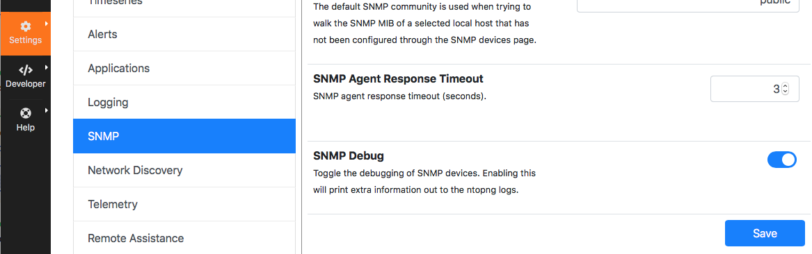
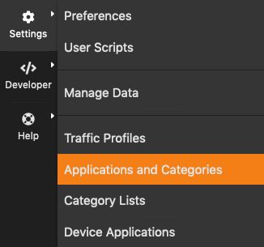
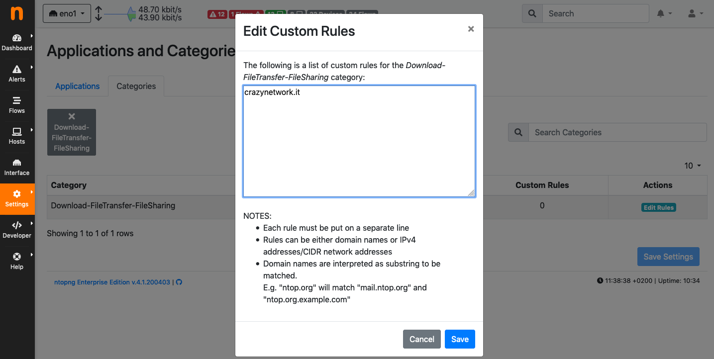
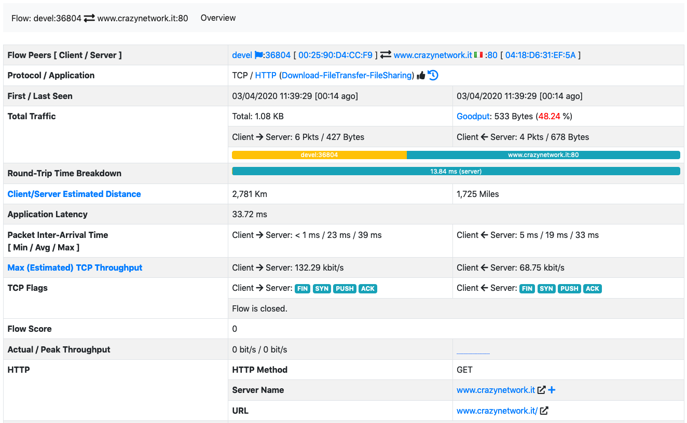

Часто задаваемые вопросы
Лицензии
Я использую nProbe с ntopng. Нужна ли мне для этого лицензия?
Да. См. nProbe страница продукта.
Я использую nProbe Cento с ntopng. Нужна ли мне для этого лицензия?
Да. См. nProbe Страница продукта Cento.
Я использую n2disk с ntopng. Нужна ли мне для этого лицензия?
Да. См. n2disk страница продукта.
Что сохранять: таймсерии, потоки, pcaps
В стандартной настройке ntopng обеспечивает видимость (почти) в реальном времени того, что происходит в сети. Исторический анализ можно выполнить с помощью ntopng, используя:
Потоки
ПКАПС
С точки зрения используемого дискового пространства, таймсерии занимают меньше места, чем потоки, которые, в свою очередь, занимают меньше места, чем pcaps. Этот статья дает полезные указания о необходимом пространстве.
Хорошее введение и обсуждение того, как использовать таймсерии, потоки и pcaps для исследования проблем, доступно в сообщении в блоге. Детализация глубже: использование ntopng для увеличения, фильтрации и перехода непосредственно к пакетам.
Таймсерии
Временные ряды используются для построения диаграмм показателей с течением времени, таких как количество байтов, отправленных и полученных хостом, или количество байтов для приложения уровня 7.
Используйте временные ряды, когда для исторического анализа не требуются ни потоки, ни пакеты.
Потоки
Контролируемый Потоки можно сохранить, чтобы к ним можно было получить доступ при проведении исторического анализа. Это позволяет вернуться в прошлое и просмотреть все прошлые потоки. Чтобы сбросить потоки, обратитесь к Дамп потоков и Исторический.
ПКАПС
Сохранение pcaps означает сохранение всего видимого трафика в файлах. Это позволяет вернуться в прошлое и получить все пакеты трафика, замеченные в любой момент времени. Это может быть очень сложно с точки зрения используемого пространства. Чтобы сохранить pcaps, см. Использование ntopng с n2disk.
Максимальное количество интерфейсов
Рекомендуемое количество интерфейсов, контролируемых устройством ntopng, работающим на обычном четырехъядерном оборудовании, равно 8. Однако фактическое максимальное количество интерфейсов может превышать 8 при использовании соответствующего оборудования.
Максимальное количество интерфейсов зависит от лицензии, как показано в следующей таблице.
Максимальное количество интерфейсов |
|
Сообщество |
8 |
Про |
8 |
Предприятие М |
16 |
Предприятие Л |
32 |
Предприятие XL |
64 |
Вышеуказанные ограничения также применяются при использовании дезагрегированных интерфейсов. Например, максимальный предел в 32 интерфейса может быть достигнут, если:
Используются 32 интерфейса без дезагрегации
Один интерфейс настроен с дезагрегацией, в результате чего получается 31 дезагрегированный подинтерфейс.
Два интерфейса настроены с дезагрегацией, в результате чего получается 15 и 16 дезагрегированных субинтерфейсов соответственно.
Не могу войти в GUI
Если вы заблокировали себе доступ к ntopng GUI после изменения метод аутентификации, вы можете сбросить метод входа ntopng на метод по умолчанию (локальная аутентификация) с помощью следующей команды:
# For ntopng 3.7 and above:
redis-cli set ntopng.prefs.local.auth_enabled 1
# For ntopng 3.6 and below:
redis-cli set ntopng.prefs.auth_type local
После перезапуска ntopng вы сможете войти в систему с учетными данными администратора.
Если вы забыли пароль администратора, вы можете сбросить его с помощью следующей команды:
redis-cli del ntopng.user.admin.password
После перезапуска ntopng вы можете войти в систему с учетными данными ntopng по умолчанию (admin, admin).
Предупреждение
Некоторые плагины браузера, которые блокируют JavaScript, могут мешать входу в систему. Иногда добавления исключения для ntopng недостаточно. Попробуй отключить их раньше сообщить о проблеме.
Примечание
Если проблема со входом в систему не устранена, иногда помогает удаление файлов cookie браузера.
Слишком много неудачных попыток аутентификации
Если устройство слишком много раз пытается войти в систему с неправильными учетными данными, это IP-адрес. адрес занесен в черный список на 5 минут. Чтобы вручную очистить черный список, можно использовать следующую команду:
for k in `redis-cli keys ntopng.cache.failed_logins.*`; do redis-cli del $k; done
После выполнения указанной выше команды и перезапуска ntopng устройство сможет войдите снова.
Сбросить ntopng настройки
Чтобы сбросить настройки ntopng, можно использовать следующие команды:
sudo systemctl stop ntopng
redis-cli keys "ntopng.*" | xargs redis-cli unlink
sudo rm /var/lib/ntopng/runtimeprefs.json
sudo systemctl restart ntopng
Примечание
В windows вместо перезапуска ntopnng с помощью инструмента systemctl вам нужно использовать Windows Диспетчер служб.
Как устранить неполадку SNMP?
Если опрос SNMP не работает должным образом, возможно, необходимо проверить сообщения низкого уровня SNMP, которыми обмениваются агенты ntopng и SNMP. Для этого необходимо включить отладку SNMP следующим образом: в меню «Настройки» -> «Настройки». выберите SNMP на левой вкладке и включите «SNMP Отладка», затем сохраните форму.

Когда начинается опрос SNMP (обычно каждые 5 минут), появляется подробный журнал действий. будет произведено. Доступ к журналам можно получить следующим образом.
Войдите в систему, где работает ntopng.
(от имени пользователя root) Journalctl -u ntopng –с момента «1 час назад» > /tmp/ntopng_log.txt
Отправьте /tmp/ntopng_log.txt команде ntop для устранения неполадок.
Не забудьте отключить «SNMP Debug», чтобы избежать заполнения освободите место на диске с помощью ntopng SNMP журналов.
Как я могу отслеживать сайты, которые посещает хост?
Чтобы отслеживать веб-сайты, посещаемые хостом, убедитесь, что он локальный (если не уверены о том, что такое страница проверки локального хоста Хозяева). Тогда ты будешь возможность немедленно просмотреть посещенные сайты, выполнив простые действия инструкции доступны на Сайты.
Обратите внимание, что отслеживаются как обычные сайты HTTP, так и сайты HTTPS!
Как узнать, кто использует большую часть моей пропускной способности?
У вас медленное подключение к Интернету? Как вы думаете, кто-то в сети потребляет всю доступную полосу пропускания? Что ж, ntopng поможет тебе в этом. понимая это.
Во-первых, взгляните на Панель управления и DashboardPro. Вы сразу увидите лучших местных говорящих и самые отдаленные места там!
Затем вы можете нажать на любой из хостов с самой высокой пропускной способностью, чтобы посмотреть, что они делают. Выберите Хост-потоки страницы и сортировка потоков в соответствии с возрастающим порядком «Фактического Thpt», чтобы иметь видимость фактического трафика, который в данный момент обрабатывает хост.
Как я могу связать имя хоста с определенной категорией?
Допустим, вы хотите связать трафик с и на имя хоста.
crazynetwork.it в категорию «Загрузка-Передача файлов-Общий доступ к файлам» как
вы знаете, что этот конкретный хост является зеркалом для загрузки ISO
изображения.
Выберите колесо «Настройки» и нажмите «Категории».

Пункт меню «Редактировать категории»
Затем добавьте имя хоста crazynetwork.it в категорию
«Загрузка-FileTransfer-FileSharing», нажав «Редактировать хосты».

Страница редактирования имен хостов категорий
Наконец, сохраните, и с этого момента у вас будет соответствующий трафик. удачно классифицирован

Страница сведений о потоке для потока с настраиваемой категорией
Дополнительную информацию и примеры можно найти по адресу Пользовательские категории.
Как я могу оценить дисковое пространство, необходимое для ntopng?
В следующем сообщении блога даются точные оценки дискового пространства. требуется ntopng для хранения таймсерий и потоков: https://www.ntop.org/ntopng/ntopng-disk-requirements-for-timeseries-and-flows/
Невозможно просмотреть данные в Grafana
Когда ntopng настроен на экспорт временных рядов в InfluxDB, можно использовать Grafana с InfluxDB в качестве источника данных для создания индивидуальной информационной панели. Если Grafana визуализация не отображает никаких данных, вот несколько шагов по устранению неполадок:
Убедитесь, что данные действительно записаны в базу данных. Простой способ сделать это заключается в том, чтобы открыть страницу диаграмм интерфейса в ntopng и посмотреть, отображается ли прошлый трафик. Более точный способ — запустить запрос из командной строки: influx -database ntopng -execute ‘выбрать * из порядка «iface:traffic» по ограничению времени 1’ он покажет самую последнюю точку данных, записанную в БД.
Убедитесь, что база данных InfluxDB, подключенная к Grafana, совпадает с базой данных. настроено в настройках таймсерии ntopng.
Если данные правильно записаны в базу данных, проблема может быть связана с пропавший без вести Индекс временных рядов из-за обновления версии InfluxDB. Необходимое шаги по включению TSI описаны в InfluxDB документация. Короче говоря, шаги для выполнения должны быть:
Измените [данные] раздел конфигурации и установите индекс-версия = «ци1»
Преобразуйте существующие данные в TSI: su -m influxdb -c «influx_inspect buildtsi -database ntopng -datadir /var/lib/influxdb/data -waldir /var/lib/influxdb/wal»
Ошибки отказа в разрешении
Если в журнале ntopng отображаются ошибки отказа в разрешении, то разрешения для каталога данных ntopng возможно, придется установить вручную.
Ошибка «открытия /var/lib/ntopng/1/rrd/bytes.rrd’: разрешение отклонено» при вызове rrd_fetch_r(/var/lib/ntopng/1/rrd/bytes.rrd, AVERAGE): возможно, RRD поврежден
Подобные ошибки обычно возникают в следующих случаях:
ntopng был запущен как root с -с или –не менять-пользователей варианты и сейчас он запускается как обычный пользователь
Ubuntu 18 иногда права доступа к новым файлам неправильные.
Чтобы решить эту проблему, следует использовать следующие команды:
sudo systemctl стоп ntopng
sudo chown -R ntopng:ntopng /var/lib/ntopng
sudo find /var/lib/ntopng -type d -exec chmod 700 {} +
sudo find /var/lib/ntopng -type f -exec chmod 600 {} +
sudo systemctl перезапустить ntopng